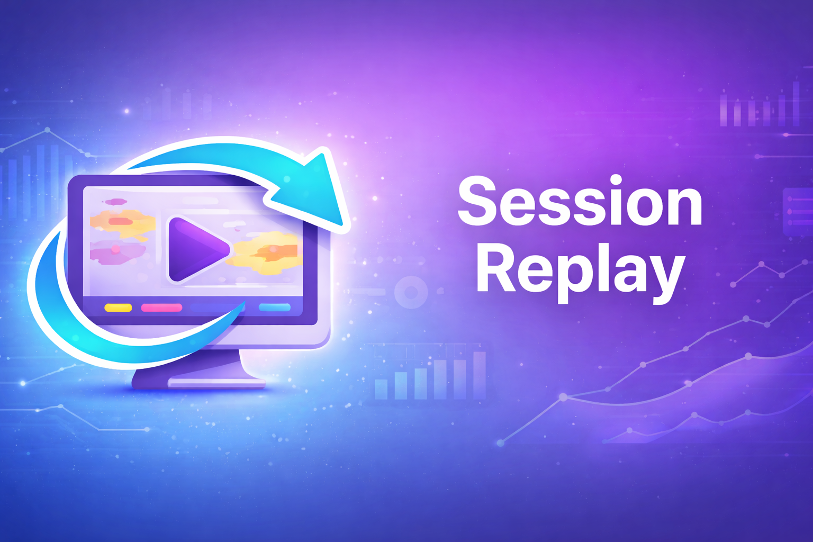

Capture browser replay data before errors and inspect it inside Odoo.
Session Replay stores raw replay payloads sent from the browser and makes them available for technical review inside Odoo. It is designed to help understand what happened right before a user-facing failure.
Keep a rolling client-side capture window before errors occur.
Save raw session replay JSON in a dedicated backend model.
Inspect captured replay records directly from Odoo views.
Works with automation flows for post-processing and AI analysis.